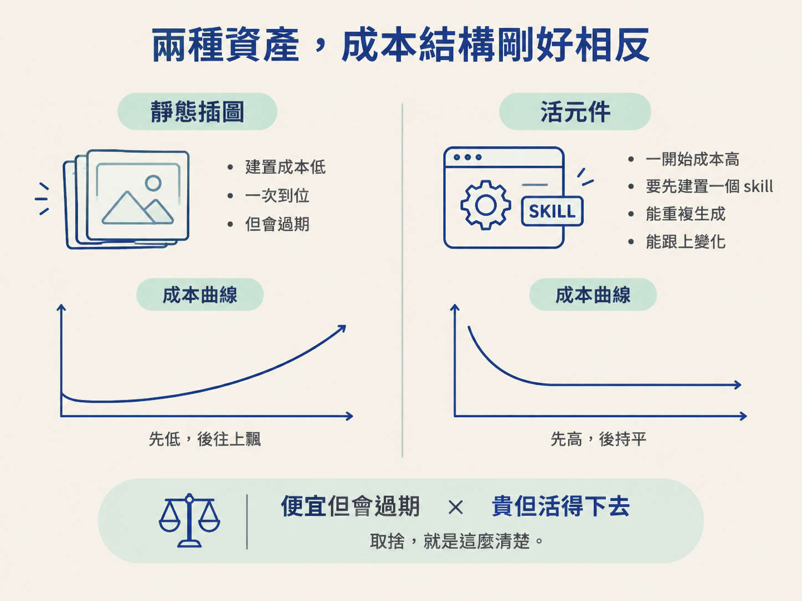
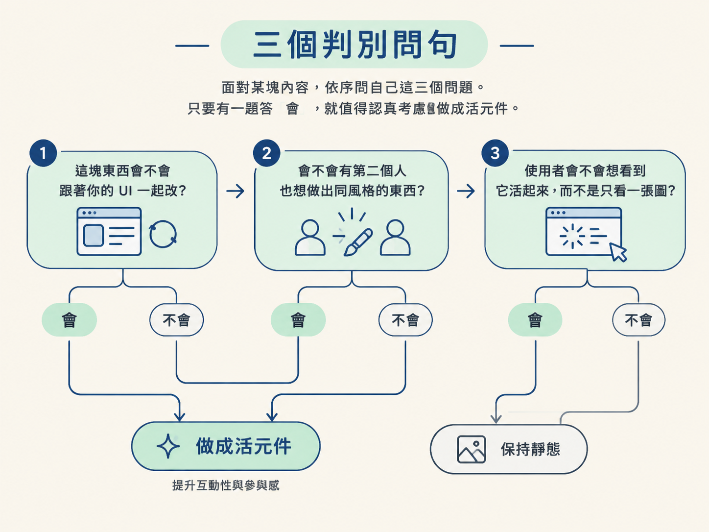
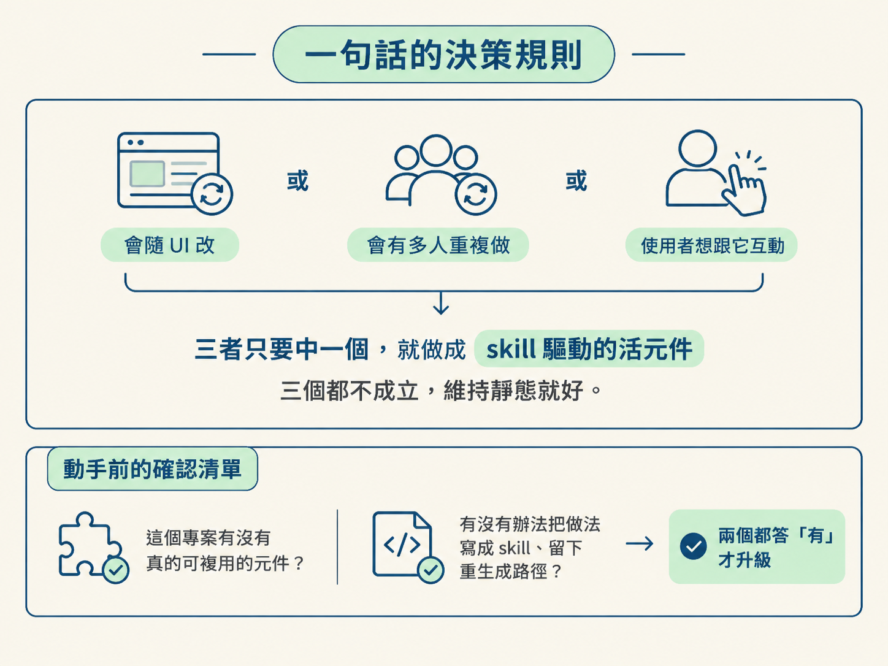

上一課你已經能把一張截圖重建成元件。學會之後很容易手癢，第一個念頭往往是：那乾脆把網站上的插圖全部換成活的元件好了。
先停一下。「做得到」跟「值得做」是兩個完全不同的問題。每多一個活元件，你就多了一份要維護、要驗證、要跟著介面改版的東西；萬一它壞了，一個出錯的互動介面往往比一張安靜的舊圖更難收拾。
所以這一課不教新工具，只處理一個決定：這一塊內容，該維持靜態，還是升級成能被 skill 重複生成的活元件？決定完之後，我們再往後看一步。這些互動未來還會多一位使用者：不是人，而是也住在瀏覽器裡的 agent。
靜態插圖和活元件不是同一種東西的精緻版，而是兩種資產。靜態的便宜、一次到位，但會過期；活的一開始貴、要先建置，但能重複生成、能跟上變化。並排來看，取捨就很清楚：

| 靜態插圖（截圖） | 活元件（skill 驅動） | |
|---|---|---|
| 建置成本 | 低，截一張圖就好 | 高，要先做出一個 skill |
| 介面改版時 | 過期，得一張張重截 | 用同一個 skill 重新生成 |
| 能不能編輯 | 不能，它就是一張圖 | 能，它本身就是程式碼 |
| 能不能響應式／適主題 | 不能，尺寸與顏色都是死的 | 能，會跟著版面與主題走 |
| 誰能維護 | 會截圖的人 | 有 skill 與專案權限的人 |
| 划算的時機 | 幾乎不會變的一次性內容 | 會反覆變動、會多人重複做的內容 |
為什麼一定要往活元件走？課程給的理由很務實：插圖其實一直在變，因為 Codex 和 ChatGPT 的介面本身就一直改。網站一開始用的是截圖，做法是「每次需要的時候就重做一次」。手動這樣做，數量一多就不可能撐住，所以他們才把做法寫成 skill，讓重新生成這件事可以反覆執行。
換句話說，活元件的價值不在「比較好看」，而在「改版的時候還活得下去」。這一點決定了下面的判準。
面對某塊內容，依序問自己這三個問題。只要有一題答「會」，就值得認真考慮做成活元件。

先講清楚：活元件不是越多越好，有三種情況規則會翻轉。
第一，內容幾乎不會變的時候。公司的 logo、一張外部授權的圖片、一次性的宣傳圖，硬做成元件只是多花工、再多養一個要照顧的東西，回報趨近於零。
第二，專案裡根本沒有可重複使用的元件與設計系統的時候。screenshot-to-component 靠的是「重建像不像既有元件」，沒有既有元件可以對，重出來的東西會退化成猜，像不像就說不準了。要動手之前，先確認這個專案裡有沒有真的元件可以拿來複用。
第三，想一次把整站插圖換掉的時候。課程說得很直白，全部手動做「根本不可能」，這件事本身就是靠 skill 撐住的。正確的順序是反過來的：先有一個 skill，先在一小塊內容上驗證它做得夠好，再慢慢擴大，而不是先承諾一大片。
另外，課程裡那個「購物車真的能把東西丟進去」的例子，作者自己也說它只是「一個邀請你更有創意」的示範。它不是每個網站都該有的功能，而是在提醒你：有些以前做不到的互動，現在已經可以了。
活元件不是做完就一勞永逸，它的核心好處就是「可以重新生成」。介面又改了一輪，你用同一個 skill 把過期的插圖重跑一遍，而不是一張一張手動重做。這也是把做法寫成 skill 的另一個理由：連維護本身都變成一條可重複執行的流程。
反過來說，如果你做出活元件卻沒留下重生成的方法，它遲早會退化成另一張「沒人敢動的圖」，那就辜負了當初升級它的目的。
課程提到一個還沒到、但方向很清楚的可能：把這些 skill 曝露給網站的使用者。想像的畫面是這樣：你的活元件本來就會依使用者想看的東西改變，那使用者也可以直接在 ChatGPT 上請它改你網站上的某個東西。用課程的原話說，這有點「meta」，而且「現在還沒到」。
再往下一步，是曝露給瀏覽器裡的 agent。元件不只給人看，還能被也跑在瀏覽器裡的 agent 操作，它就從「給人互動的介面」變成「agent 也能互動的介面」。課程說這件事「很新、很 meta」，如果你現在還沒有用得上的場景，完全沒關係，先知道方向就好。
這條路上已經有一個具體例子：把 screenshot-to-component 用在內容頁上，做一個給新同事看的教學頁。規格寫得很細：要像一篇冷靜的編輯式導覽，不是行銷頁、不是儀表板、也不是投影片；要有看得見的步驟編號與簡短說明，每段配一張由截圖重生的大插圖，再加上簡單的錨點導覽。這正是上一課那個 skill 的直接應用：截圖不再只是截圖，而是每一段都能被重建成符合產品的元件。
把上面收斂成一句當場能用的規則：這塊內容會隨 UI 改、會有多人重複做、或使用者想跟它互動，三者只要中一個，就做成 skill 驅動的活元件；三個都不成立，維持靜態就好。

決定之前再確認一次清單：這個專案裡有沒有真的元件可以重複使用？有沒有辦法把做法寫成 skill、留下重生成的路徑？兩個都答「有」，才動手升級。
靜態插圖便宜、一次性，但會過期；skill 驅動的活元件貴、要先建置，但能重複生成、跟得上改版。判斷只看三件事：會不會隨 UI 改、會不會有第二個人重複做、使用者會不會想看到它活起來，中一個就值得升級。但也不是越多越好，幾乎不變的內容、沒有可複用元件的專案、以及想一次換掉整站插圖的衝動，都該踩煞車。最後，這條線的下一步是把互動曝露給使用者與 browser agent，方向很新，但現在就可以先知道。
走到這裡，這個節點的四步就完整了：從 living frontend 的定義，到兩個具體例子，再到動手做 screenshot-to-component，最後回到「該不該做、怎麼維護、未來長什麼樣」的判斷。你可以從自己做過的專案挑一小塊靜態內容，把上面三個判別問句走一遍，再決定要不要升級，這是最能留下印象的練習。